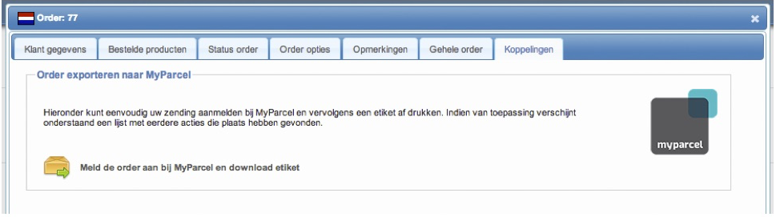
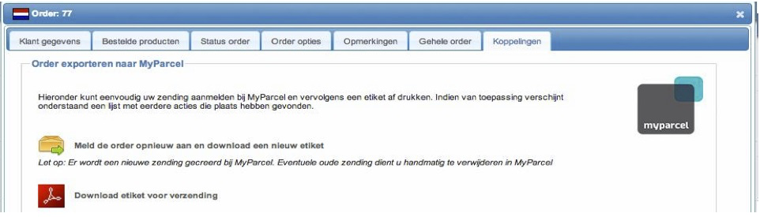
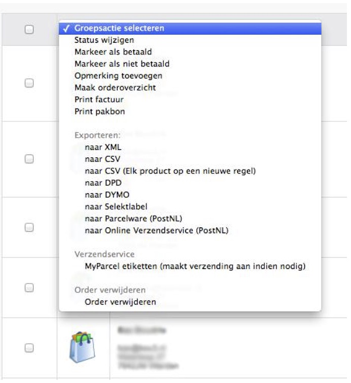

Inleiding
CCV shop heeft een koppeling gerealiseerd met MyParcel. MyParcel is een oplossing voor web winkeliers die hun verzendproces gemakkelijker en voordeliger willen organiseren. De voornaamste voordelen zijn voordelige tarieven, uitstekende service en de betrouwbare levering van PostNL.
Met de koppeling die CCV shop heeft ontwikkeld kun je heel eenvoudig met één druk op de knop in het onderhoudspanel jouw zendingen aanmelden bij MyParcel en vervolgens direct een etiket afdrukken zonder dat je daarvoor in MyParcel bent ingelogd.
Ook wordt automatisch de Track & Trace code toegevoegd aan een order, zodat je d.m.v. een status update de klant op de hoogte kunt brengen van de Track & Trace code.
Dit bespaart je dus veel tijd omdat je jouw gegevens niet nogmaals hoeft in te voeren of dat je moet werken met import bestanden.
Deze handleiding beschrijft hoe je de koppeling instelt en vervolgens ook gebruikt.
Inhoud
1 Instellen van de koppeling
Het koppelen met MyParcel is erg eenvoudig. Uiteraard dien je eerst een account te hebben bij MyParcel. Deze is aan te vragen op hun website, http://www.myparcel.nl.
Wanneer je een account bij MyParcel hebt, dien je ook een API key aan te vragen. Deze is aan te vragen bij je accountmanager van MyParcel.
Als dit geregeld is, kun je in het onderhoudspanel bij CCV shop dit account instellen. Dit kun je doen onder:
“Mijn webshop”->”Instellingen”->”Verzendkosten & logistiek”->”MyParcel verzendservice”.
Je vindt hier de volgende instellingen die je moet invullen om de koppeling te laten werken:
MyParcel gebruikersnaam
Vul hier de gebruikersnaam in waarmee je inlogt op de MyParcel.nl website
MyParcel API key
Vul hier de API key in die je ontvangen heeft van jouw accountmanager bij MyParcel
Handtekening voor ontvangst
Geef hier aan of je een handtekening wenst voor ontvangst van het pakket. Wanneer je dit wenst, zal de ontvanger eerst een handtekening moeten zetten bij de bezorger voordat hij/zij het pakket in ontvangst mag nemen. (let op: MyParcel kan hier extra kosten voor rekening, vraag naar de tarieven bij MyParcel)
Retour bij geen gehoor
Geef hier aan of het pakket retour gestuurd moet worden als er niemand thuis is. (let op: MyParcel kan hier extra kosten voor rekening, vraag naar de tarieven bij MyParcel)
Alléén huisadres
Wanneer de pakketten die je verstuurd niet bij de buren bezorgd mogen worden, kun je het beste deze instelling op Ja zetten. Hierdoor zal het pakket niet afgeleverd worden bij de buren. (let op: MyParcel kan hier extra kosten voor rekening, vraag naar de tarieven bij MyParcel)
Verzekerd verzenden
MyParcel kent meerdere verzekeringen voor het verzenden van jouw pakket. Uiteraard is het mogelijk om niet het pakket te verzekeren. Daarnaast kun je de volledige order waarde verzekeren. Ook kun je kiezen voor een vast verzeker bedrag. Mocht er een betere staffel zijn waarin het order totaal past, dan zal automatisch er een gunstiger verzekerd bedrag mee gezonden worden.
Bij het verzekerd verzenden zijn extra kosten verbonden bij MyParcel. Je kunt het beste contact opnemen met MyParcel voor meer informatie.
CCV shop is niet aansprakelijk voor verkeerde instellingen/verzendingen m.b.t. verzekering en andere mogelijkheden. Kijk altijd voor het verzenden van het pakket of het juiste etiket afgedrukt is met bijbehorende verzekering.
Gebruik maken van de koppeling
Gefeliciteerd! Je hebt nu een koppeling gemaakt met MyParcel. Je kunt nu gebruik maken van de koppeling.
Er zijn twee manieren om een order te verzenden naar MyParcel en een etiket af te drukken. Dit kan bij een individuele order en d.m.v. groepsacties.
1.1 Order versturen bij een individuele order
Zoals je waarschijnlijk weet staan alle orders in het orderbeheer (“Mijn klanten”->”Orderbeheer”) en beheer je daar alle binnenkomende orders.
Als je in het orderbeheer een order aanklikt, krijg je een nieuw venster met alle informatie omtrent deze order. Als je vervolgens naar tabblad “Koppelingen” gaat zie je daar een kopje “Order exporteren naar MyParcel”.

Wanneer je de order nog niet verzonden hebt naar MyParcel heb je daar één optie staan “Meld de order aan bij MyParcel en download etiket”. Als je daar op drukt zal “onder water” de order verzonden worden naar MyParcel en zal er een verzending aangemaakt worden bij MyParcel. Vervolgens als dit succesvol is, ontvang je als download het etiket wat je kunt afdrukken.
Daarnaast wordt automatisch de Track & Trace code ingevuld bij de order zodat je de klant op de hoogte kunt brengen.
Wanneer je bij een order al eens de order verstuurd hebt naar MyParcel zie je twee mogelijkheden: “Meld de order opnieuw aan en download een nieuw etiket” en “Download etiket voor verzending”.

De eerste mogelijkheid, “Meld de order opnieuw aan en download een nieuw etiket”, is bedoeld om de order opnieuw aan te melden als je bijvoorbeeld de verzending bij MyParcel verwijderd hebt of dat er bijvoorbeeld wijzigingen zijn in het adres van de order. Let hierbij wel op dat de oude verzending niet automatisch verwijderd wordt bij MyParcel maar dat je dit handmatig bij MyParcel moet doen.
Met de tweede optie, “Download etiket voor verzending”, kun je eenvoudig nogmaals het etiket afdrukken. Alle data bij MyParcel blijft dan hetzelfde, je ontvangt dan alleen het etiket wat je kunt afdrukken op de doos.
1.2 Order versturen d.m.v. groepsacties
Wanneer je meerdere orders tegelijkertijd wilt verzenden naar MyParcel en/of meerdere etiketten tegelijkertijd wilt afdrukken, dan kun je gebruik maken van een groepsactie.
In het orderbeheer kun je voor elke order een vinkje aanzetten. Je kunt meerdere orders aanvinken die je wilt verzenden naar MyParcel. Vervolgens kies je bovenin bij het pulldown menu “Groepsactie selecteren” de optie “MyParcel etiketten (maakt verzending aan indien nodig)”. Vervolgens zullen alle orders die nog niet naar MyParcel zijn verzonden automatisch verzonden worden. Daarnaast zal er voor elke order een etiket aangemaakt worden en deze kun je vervolgens downloaden.

Alléén de orders die dus nog niet verzonden zijn naar MyParcel zullen aangemaakt worden. Ze worden niet opnieuw aangemaakt zodat je geen dubbele verzendingen krijgt in MyParcel en in één keer meerdere orders kunt afdrukken zonder je druk te hoeven maken over de techniek er achter.
Wil je toch een zending opnieuw versturen naar MyParcel dan kun je dit doen bij een individuele order. Voor meer informatie, zie de paragraaf hierboven “Order versturen bij een Individuele order”.
1.3 Terug zien van statussen
In het orderbeheer kun je bij elke order zien of de order verzonden is naar MyParcel of niet. Daarnaast kun je zien of dit gelukt is.

Wanneer er onderaan de order geen geel pakketje te zien is, dan is de order nog niet verzonden. Als er een geel pakketje met een groene pijl naar rechts staan, dan is de order succesvol verstuurd. Wanneer er een geel pakketje te zien is met een rood stop teken, dan is de order wel verstuurd, maar is deze niet geslaagd.
Door middel van deze iconen heb je altijd overzicht van welke orders wel en niet verzonden zijn. Ook bij een individuele order, onder tabblad “koppelingen”, wordt de historie bij gehouden van de acties die naar MyParcel gedaan zijn.